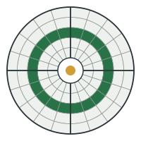
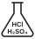
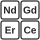

Celda
Una posición para un disco, en el cruce de un sector y una capa. Cada celda admite un único disco.
SYNCRODYSON · AYUDA
Conceptos, siglas e iconos del juego. En los diagramas de la esfera, la parte sombreada en verde identifica cada concepto.
Una posición para un disco, en el cruce de un sector y una capa. Cada celda admite un único disco.

Cada una de las 4 grandes divisiones de la esfera: Alpha, Beta, Gamma y Delta. Cada cuadrante contiene 5 sectores y 25 celdas.

Cada una de las 20 divisiones radiales de la esfera. Un sector atraviesa las 5 capas y contiene 5 celdas, una por capa.

Cada uno de los 5 anillos de la esfera: Estructura, Fotovoltaica, Transmisión, Refrigeración y Microondas, desde el interior hacia afuera. Cada capa contiene 20 celdas.
Indica el máximo de cuadrantes distintos donde puedes colocar los discos. Por ejemplo, [=<]2[QU] permite colocarlos todos en el mismo cuadrante o repartirlos entre hasta 2 cuadrantes distintos.

Las cartas de proyecto permiten construir nuevas partes de la esfera y potentes estructuras de apoyo. Puedes obtenerlas mediante draft o comprándolas en el mercado.

Se usa para llevar el registro de cuántos contratos de contratación pagaste. Si ninguna carta modifica ese valor, tus ingenieros más las fichas de Contratación deben sumar 12.
Cada cuadrante de soporte admite un disco de Control. Al colocar un disco en el soporte, quien lo coloca gana 1 PV por cada dos discos de todo el cuadrante, redondeando hacia arriba; cada jugador cobra $1 por cada disco propio de ese cuadrante.
Indica un destino alternativo o condicional. Sigue la instrucción de la carta; si ofrece varias opciones, elige una, salvo que indique expresamente lo contrario.
Se usa para pagar compras y costos obligatorios, y para cobrar ventas e ingresos. Al final de la partida, cada $10 se convierten en 1 PV; el dinero sobrante sirve para desempatar.

Colocar discos en la esfera es una forma de obtener puntos y mostrar cuánto contribuiste a construir la estructura. En un sector, quien coloca gana 1 PV por cada disco presente y cada jugador cobra $2 por cada disco propio.

Disco destinado a las áreas de soporte de la esfera: Control, Sensores y Mantenimiento. La base del icono lo distingue del disco DS.
Se coloca como un [DS] disco normal, pero no otorga puntos por colocación.

La figura del ingeniero químico (IQ) parado sobre un disco indica que se coloca ese ingeniero junto con un disco, según el efecto de la carta.
La figura del ingeniero electromecánico (IM) parado sobre un disco indica que se coloca ese ingeniero junto con un disco, según el efecto de la carta.
Identifica proyectos de tipo Economía. Sus cartas pueden modificar dinero, recursos u operaciones de mercado; consulta el efecto de cada proyecto para conocer sus reglas.

Es un recurso que se asigna a las etapas de proyectos y refinerías. Puedes comprarla en Mercado o durante Mantenimiento. Toda la energía que sobre al final de la ronda se descarta.
Identifica las celdas de Estructura de la esfera. Si al colocar un disco la capa de estructura está vacía, quien lo coloca paga $5 al banco por acarreo.

Identifica celdas fotovoltaicas de la esfera. Las cartas de proyecto indican en qué cuadrante puedes colocar discos de este tipo.

Tipo de ingeniero que puedes contratar en Mercado y asignar a las etapas que lo requieren. Al activar un proyecto o refinería, los ingenieros usados vuelven a las barracas.

Tipo de ingeniero que puedes contratar en Mercado y asignar a las etapas que lo requieren. Al activar un proyecto o refinería, los ingenieros usados vuelven a las barracas.

Tipo de ingeniero que puedes contratar en Mercado y asignar a las etapas que lo requieren. Al activar un proyecto o refinería, los ingenieros usados vuelven a las barracas.

Tipo de ingeniero que puedes contratar en Mercado y asignar a las etapas que lo requieren. Al activar un proyecto o refinería, los ingenieros usados vuelven a las barracas.
Las licencias se usan para activar yacimientos. No puedes extraer recursos de un yacimiento, aunque sea tuyo, si no tienes todas las LE que aparecen atenuadas en su carta.

Cada cuadrante de soporte admite hasta dos discos de Mantenimiento. Los discos de soporte cuentan para los bonos de todo el cuadrante al colocar nuevos discos.

Una mejora se coloca junto al área de Soporte externo y entra en vigor de inmediato. Si ya hay otra mejora activa allí, se mueve a proyectos completados. Cada carta indica cómo modifica el beneficio del soporte.
La carta de Mercado permite programar compras y ventas de recursos y Transporte, contratar o despedir ingenieros, comprar o vender proyectos y prospectar yacimientos. Las operaciones se resuelven en el orden indicado por los dados.

Identifica celdas de Microondas de la esfera. Las cartas de proyecto indican en qué cuadrante puedes colocar discos de este tipo.

Identifica proyectos de tipo Producción. Sus requisitos y efectos están indicados en cada carta.
Indica cuánta energía producen tus generadores. Durante Mantenimiento recibes esa cantidad de energía; los bonos de las cartas aumentan este valor.
Las CP con este destino se agregan a tu mazo de proyectos completados después de resolver su efecto. No volverán a usarse hasta el conteo de puntos al final de la partida.

Miden tu progreso. Se obtienen durante la partida por efectos y por colocar discos; los proyectos completados y otros elementos también pueden sumar PV al final.

Reactivos que puedes gastar en una refinería para obtener la tierra rara indicada por el yacimiento. Se usa HCl para Gd y Er, y H₂SO₄ para Ce y Nd.
Estas cartas de proyecto permiten contratar empleados alterando las reglas usuales del mercado laboral.
Para activarla, asigna los recursos e ingenieros requeridos durante la fase de Planificación. Durante la fase de Ejecución, usa un yacimiento con todas sus licencias. Obtienes sus recursos básicos; si gastas el reactivo indicado, también obtienes su tierra rara. Luego reduces sus vetas en 1.

Identifica celdas de Refrigeración de la esfera. Las cartas de proyecto indican en qué cuadrante puedes colocar discos de este tipo.

El destino repetible devuelve el cubo a la etapa indicada y deja la carta en su espacio de proyecto. Para activar otra vez su efecto «Al completar», vuelve a completar las etapas pendientes. Si lo prefieres, puedes ignorar este destino y tratar la carta como un [CM] normal.
Cada cuadrante de soporte admite un disco de Sensores. Los discos de soporte cuentan para los bonos de todo el cuadrante al colocar nuevos discos.
Puedes asignar ingenieros a Soporte externo. Durante Mantenimiento, cada uno te da $1 y luego vuelve a las barracas. Una mejora activa puede cambiar el beneficio.

Son elementos químicos estratégicos para proyectos de tecnología de punta. Requieren reactivos especiales y procesos más complejos que los minerales comunes. El yacimiento indica qué tierra rara puedes obtener; para extraerla, activa una refinería con el reactivo requerido: Nd y Ce usan H₂SO₄; Gd y Er usan HCl.
El efecto se aplica a todos los jugadores, no solo a quien completó la carta. Sigue las cantidades y condiciones indicadas en el efecto.

Identifica celdas de Transmisión de la esfera. Las cartas de proyecto indican en qué cuadrante puedes colocar discos de este tipo.

Es un recurso que se compra y vende en Mercado y que requieren los proyectos que colocan discos en la esfera, porque hay que transportarlos hasta allí. Su valor básico es $7, pero puede variar.

Las CP con destino [MA] regresan a tu mano tras resolver su efecto. No darán puntos al final de la partida, pero podrás construirlas de nuevo. Como alternativa, agrégalas a proyectos completados como si tuvieran destino [CM].
Las cartas de yacimiento muestran los recursos, las vetas y las licencias necesarias para extraerlos. Asigna todas las licencias indicadas y activa una refinería; cada activación reduce sus vetas en 1. Al llegar a 0, el yacimiento se agota y se descarta; recuperas obligatoriamente las LE asignadas.
La figura del ingeniero parado sobre un disco indica que se coloca ese ingeniero junto con un disco, según el efecto de la carta.

La figura del ingeniero parado sobre un disco indica que se coloca ese ingeniero junto con un disco, según el efecto de la carta.
Durante Mantenimiento se revela un evento por jugador y se resuelven las cartas. Si una carta tiene un ajuste de mercado, se aplica antes del evento. Algunas cartas solo tienen efecto de evento.

Indica un ingeniero que permanece junto a un disco en la esfera. Al final de la partida genera la penalización por personal anclado. Al retirar su disco, aplica la regla del manual o la excepción indicada por la carta.

El efecto se calcula durante la puntuación final, según las condiciones de la carta. Puede otorgar o restar PV; no se resuelve al completar el proyecto.
Se refiere a una celda de la esfera que no contiene ningún disco. Consulta la carta para saber qué capa, sector o cuadrante debe cumplir esa condición.

Son puntos de victoria que se ganan o pierden al resolver el efecto. Actualiza inmediatamente tu posición en el recorrido de puntuación.

Retira un disco que cumpla los requisitos del efecto. Aplica las reglas de retirada e ingenieros anclados del manual, salvo las excepciones expresas de la carta.

Representa la estrella situada en el centro de la esfera de Dyson. Sirve como referencia visual del mapa.

Relaciona una cantidad con aquello por lo que se obtiene o calcula. Por ejemplo, 3 PI / disco significa 3 puntos inmediatos por cada disco que cumpla la condición indicada.